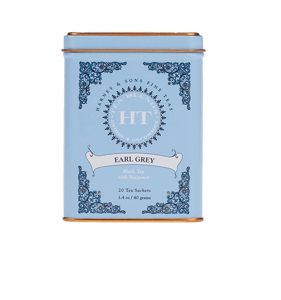

Sometimes, when you follow your passion, amazing things happen.
Our story is that story.
Our Teas



About Harney & Son's
Harney & Sons offers over 300 varieties of the highest quality teas, sourced from the finest tea regions around the world. Our blends include classics like Earl Grey, our signature flavors like Hot Cinnamon Spice and Paris, several varieties of Matcha, more adventurous teas like Bamboo and everything in between. No matter which tea you choose, our expertise and commitment to quality are brewed into each cup.